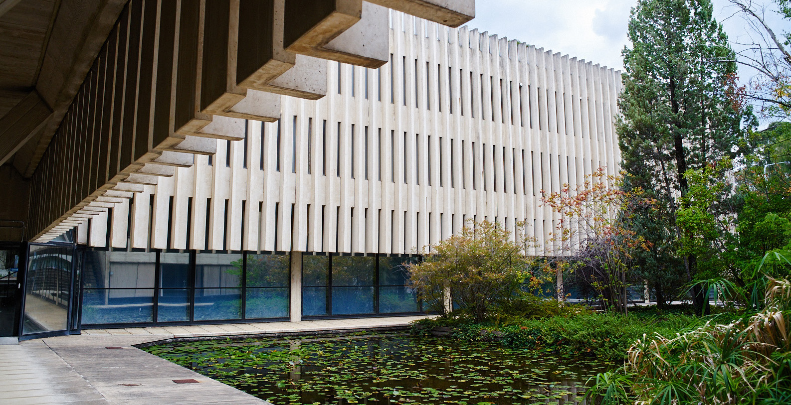

An Introduction
Churchill House, at 216 Northbourne Avenue in Braddon, was designed by Robin Boyd for the Winston Churchill Memorial Trust of Australia in 1969-70, and construction was completed in 1971. It was Boyd’s last major commission, and he died prior to its completion. It is one of a small number of larger designs produced by Boyd and was Canberra’s first brutalist building.
Several components make up the complex:
- The main building, with east and south wings
- The separate north wing or pavilion
- The central pool
- A rear carpark
The main building forms an L shape and with the north wing it encloses a courtyard with a large ornamental pool. The main building is three storeys high with a four storey lift tower at the southeast corner. The north wing and the carpark are two storeyed.
Although it has undergone some alterations over the years, the building still displays key features of the brutalist style with its large areas of blank wall and use off-form concrete, sloping structural fins and precast concrete non-loadbearing wall panels, precast fins for sun protection, and vertical slit windows. Churchill House displays a fairly restrained form in comparison with the major Canberra buildings that followed in this style:
- Cameron Offices
- National Gallery of Australia
- High Court of Australia